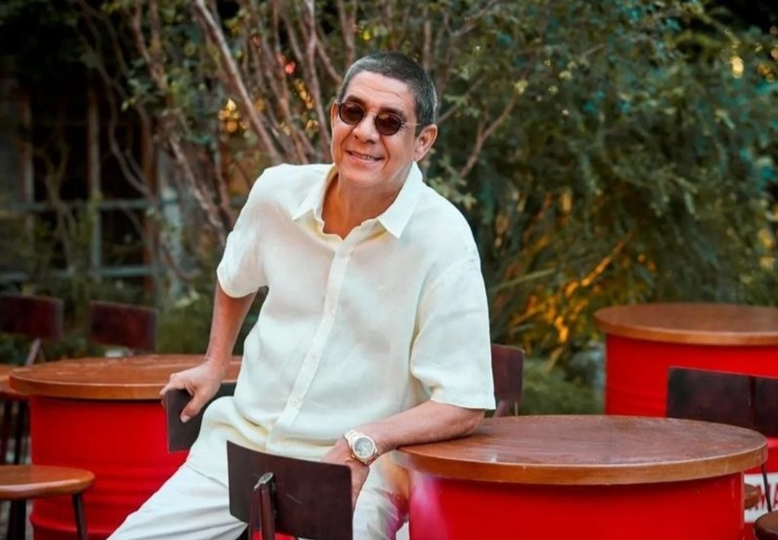

Jessé Gomes da Silva Filho, o Zeca Pagodinho, nasceu no dia 14 de fevereiro de 1959, em Irajá e foi criado em Del Castiho, bairros do subúrbio do Rio de Janeiro.
Desde cedo, destacou-se nas rodas de samba que frequentava nos subúrbios cariocas, onde apresentou suas primeiras rimas e sua voz rouca e rasgada de partideiro. Foi em 1981, na quadra do bloco carnavalesco Cacique de Ramos, onde se reuniam todas as quartas-feiras compositores e cantores num encontro denominado pagode, que Zeca conheceu a cantora Beth Carvalho que o convidou para participar de seu novo disco e cantar a faixa "Camarão que Dorme a Onda Leva", de sua autoria em parceria com Arlindo Cruz.
Casado com Mônica, Pagodinho mora, desde
1991, num sítio em Xerém, na Baixada
Fluminense, onde, em
1998, criou uma escola de música para crianças carentes. Para ele "todo mundo deveria estudar
música", pois "música é tudo. Quem tem música, tem boa cabeça".
Lá, é o rei do pedaço. Abre e fecha o bar do Geraldo, ou Júnior Bar, onde chega um pouco depois das
6 da manhã para, segundo o próprio Geraldo, "bater papo e, às vezes, tomar uma cervejinha".
Geraldo também afirma que as ininterruptas visitas do cantor transformaram totalmente seu cotidiano:
"Antes aqui era só vazio. Agora vem gente do Brasil e do mundo inteiro se sentar aqui e pedir um
tira gosto e uma bebida só para esperar o Zeca chegar", diz.
E é lá, em Xerém, no bar do Geraldo, que ele canta e faz suas novas composições.
Sincero como sua música, Zeca, em uma entrevista concedida em 1997 à repórter Daniela Name de "O
Globo", afirmou: "Come mais um doce, come. Engorda um pouco. Essa história de que mulher gorda é
mulher feia é invenção de quem não gosta de mulher. Para mim não importa: gorda, magra, preta,
branca... Só faço distinção entre nacional e estrangeira, por que me comunico em português.
Na mesma entrevista ainda explicou qual é sua maneira de encarar a vida: "Nunca me importei com luxo e
isso sempre espantou as pessoas. Bom mesmo é todo mundo feliz e a geladeira sempre cheia".